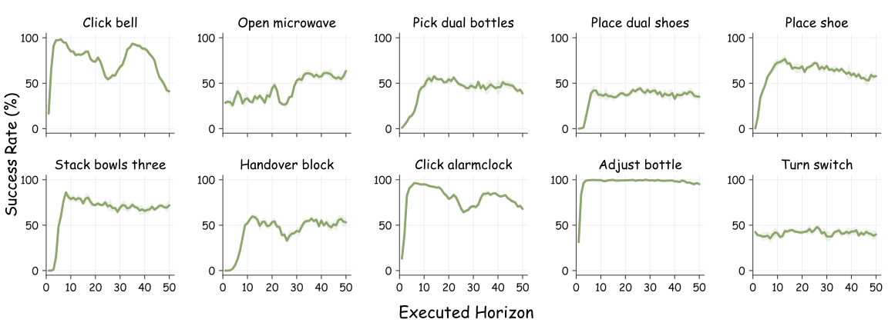
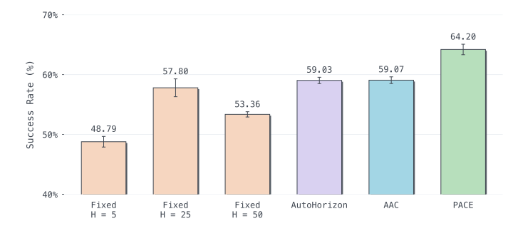
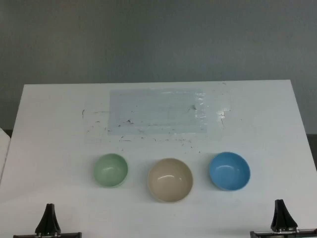

Recent advances in vision–language–action and diffusion-based robot policies have largely come from training-side gains, but reliable deployment also depends on how predicted actions are executed. Under action chunking, each query predicts a sequence of future actions, and the robot executes an open-loop prefix before re-querying. The length of this prefix, the execution horizon, is a critical inference-time variable that trades off feedback frequency against motion continuity. Since fixed horizons exhibit strongly task-dependent and non-monotonic effects on success, no single constant horizon provides a reliable cross-task deployment rule. We propose PACE (Phase-Aware Chunk Execution), a training-free test-time execution method that selects the execution horizon online from the predicted chunk itself. PACE exploits the phase-dependent kinematic structure of manipulation trajectories, using prominent low-speed valleys in the predicted speed profile as candidate replanning points. On the 50-task RoboTwin2.0 benchmark, PACE improves the average success rate from 57.8% to 64.2% over the strongest fixed-horizon baseline, using thresholds calibrated from each task's existing training demonstrations, without task-specific fixed-horizon tuning. On the same benchmark, PACE also exceeds AutoHorizon and AAC in overall success rate by approximately 5.2 and 5.1 percentage points, respectively. In real-robot experiments, relative to fixed H=50, PACE improves the average task score from 60.7 to 77.7 and the average success rate from 50.7% to 70.4%.
Abstract
Why adapt the execution horizon?
Fixed horizons have task-dependent, non-monotonic effects on success. More frequent feedback does not automatically mean better task performance.

How PACE works
The first accepted valley selects 20 actions, before the fixed boundary at step 25.
Earlier dips are rejected. The first accepted valley selects 36 actions, beyond the fixed boundary.
No valley passes the filter. PACE executes the full 50-action chunk in this example.
From a single predicted action chunk, PACE selects the earliest accepted low-speed valley in its smoothed speed profile. The robot executes the selected prefix, discards the remaining actions, and queries the policy again using a new observation. If no valley is accepted, PACE uses the maximum execution horizon.
The selection criterion is calibrated using existing demonstrations. No model retraining is required.
50 tasks. One execution rule.
On RoboTwin2.0, PACE improves π₀.₅ from 57.8% to 64.2% over the strongest global fixed horizon. It also exceeds AutoHorizon and AAC by approximately 5.2 and 5.1 percentage points.

Means and standard deviations
| Strategy | Success rate (%) |
|---|---|
| Fixed H = 5 | 48.79 ± 0.89 |
| Fixed H = 25 | 57.80 ± 1.49 |
| Fixed H = 50 | 53.36 ± 0.44 |
| AutoHorizon | 59.03 ± 0.53 |
| AAC | 59.07 ± 0.56 |
| PACE | 64.20 ± 0.88 |
Bars show the mean; error bars show sample SD across three evaluation seeds. The 50 tasks are equally weighted. Y-axis: 40–70%.
Real-robot execution
Equal-weight averages across three real-robot task entries, compared with fixed H = 50.

The same paper image marks both video slots. Paired recordings will replace these layout samples.
LIBERO Results
| Method | Spatial | Object | Goal | LIBERO-10 | Overall |
|---|---|---|---|---|---|
| H = 2 | 97.20 ± 0.92 | 91.47 ± 0.50 | 85.87 ± 1.17 | 77.73 ± 1.33 | 88.07 ± 0.28 |
| H = 4 | 97.67 ± 0.31 | 94.33 ± 0.90 | 93.13 ± 1.62 | 83.33 ± 1.92 | 92.12 ± 0.30 |
| H = 8 | 96.87 ± 0.90 | 96.20 ± 0.72 | 96.00 ± 0.53 | 88.00 ± 0.87 | 94.27 ± 0.37 |
| H = 16 | 96.27 ± 0.99 | 97.00 ± 0.92 | 96.53 ± 1.01 | 88.07 ± 0.31 | 94.47 ± 0.23 |
| AutoHorizon | 96.13 ± 0.42 | 96.67 ± 0.31 | 95.80 ± 0.80 | 91.07 ± 1.45 | 94.92 ± 0.44 |
| PACE | 97.00 ± 0.72 | 97.73 ± 0.23 | 96.93 ± 0.90 | 89.67 ± 1.17 | 95.33 ± 0.18 |
Mean ± sample SD across three evaluation seeds. Bold: highest mean in each column.